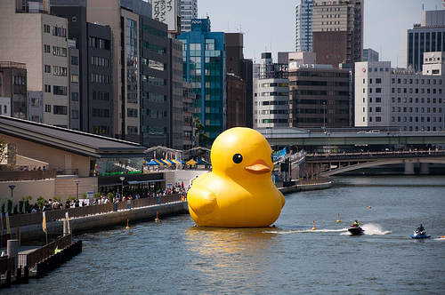

.middle.center .middle.fullscreen  <div class="" style="position:absolute;top:5%;left:5%;-webkit-transform:rotate(-17deg);-moz-transform:rotate(-17deg);transform:rotate(-17deg)"> <h1> CSS </h1> </div> <div class="" style="position:absolute;top:9%;left:12%;"> <h1>Cascading Style Sheets</h1> </div> --- .agenda # Agenda * Introduksjon * Layout * Oppgave * Design * Oppgave --- .middle.center # INTRODUKSJON TIL CSS --- .middle.center.fullscreen  --- .middle.center.fullscreen  --- .middle.center  [graphicpeel.com/cssiosicons](http://graphicpeel.com/cssiosicons) --- .middle.center  [v2.desandro.com/articles/opera-logo-css](http://v2.desandro.com/articles/opera-logo-css/) --- #css .css selector {property:value} --- # CSS properties <!-- .css selector {property:value} --> .css selector { background: #f00; /* Bakgrunn */ font-size:20px; /* Tekst */ line-height:1.5; border: 1px solid red; /* Kanter */ border-radius: 20px; box-shadow: 0 0 20px rgba(0,0,0,0.2); height:20px; /* Dimensjoner */ width:30px; float:left; /* Posisjon */ position:absolute; top:10px; left:25px; margin:10px; /* Spacing */ padding: 10px 0; } --- #css selectors .css /* <body>...</body> */ body { padding:0 } /* <div class="ninja">...</div> */ .ninja {color:black; visibility:hidden} /* <div id="submarine">...</div> */ #submarine { color: yellow; position:absolute; bottom: 0 } --- #css selectors .css element .class #id #id .class element /*kombinasjon av forskjellige selektorer*/ .class1.class2 .class3 /*?*/ element .class #id /*wtf*/ e:active, e:hover, e:focus /*match basert på interaksjon*/ e[foo] /*matcher elementer med attr "foo", uansett verdi*/ e[foo="warning"] /*?*/ e:first-child /*matcher e når e er første barn av sin forelder*/ e:last-child /*?*/ e:first-of-type /*?*/ [https://developer.mozilla.org/en-US/docs/CSS/Getting_Started/Selectors](https://developer.mozilla.org/en-US/docs/CSS/Getting_Started/Selectors) --- .center.middle ##Hva om flere selektorer sloss om samme element? --- .middle.fullscreen  <div class="" style="position:absolute;top:5%;left:5%;"> <h1> Hvem vinner? </h1> </div> <!-- .middle.center #Det kommer an på..! --> --- .middle #1. Kommer stilene fra flere kilder? ##Browser style sheets? ##User style sheets? ##Author style sheets? <!-- http://www.maxdesign.com.au/articles/css-cascade/ --> --- .middle #2. Sortere stilarkene etter prioritet ######5 Browser style sheets #####4 User style sheets ####3 Author style sheets ###2 !important i Author style sheets ##1 !important i User style sheets <!-- .middle #3. Vekting av selektorer --> --- #3. Specificity .css * { color:red } <div class="center"> <table class="specificity"> <thead> <tr><th>Inline</th><th>ID</th><th>Class</th><th>Element</th></tr> </thead> <tbody> <tr><td>0</td><td>0</td><td>0</td><td>0</td></tr> </tbody> </table> </div> <!--http://css-tricks.com/specifics-on-css-specificity/ http://www.standardista.com/css3/css-specificity/ http://reference.sitepoint.com/css/specificity http://designshack.net/articles/css/what-the-heck-is-css-specificity/ http://coding.smashingmagazine.com/2010/04/07/css-specificity-and-inheritance/ (arv og specificity) http://coding.smashingmagazine.com/2007/07/27/css-specificity-things-you-should-know/ Kalkulator: http://specificity.keegan.st/ CSS Specificity in 138 characters: CSS Specificity is 4 columns: inline=1|0|0|0, id=0|1|0|0, class=0|0|1|0, element=0|0|0|1 Left to right, the highest number takes priority --> --- #3. Specificity .css body div.featured { color:red } <div class="center"> <table class="specificity"> <thead> <tr><th>Inline</th><th>ID</th><th>Class</th><th>Element</th></tr> </thead> <tbody> <tr><td></td><td></td><td></td><td></td></tr> </tbody> </table> </div> --- #3. specificity .css body div.featured { color:red } <div class="center"> <table class="specificity"> <thead> <tr><th>Inline</th><th>ID</th><th>Class</th><th>Element</th></tr> </thead> <tbody> <tr><td></td><td></td><td></td><td>2</td></tr> </tbody> </table> </div> --- #3. specificity .css body div.featured { color:red } <div class="center"> <table class="specificity"> <thead> <tr><th>Inline</th><th>ID</th><th>Class</th><th>Element</th></tr> </thead> <tbody> <tr><td></td><td></td><td>1</td><td>2</td></tr> </tbody> </table> </div> --- #3. specificity .css body div.featured { color:red } <div class="center"> <table class="specificity"> <thead> <tr><th>Inline</th><th>ID</th><th>Class</th><th>Element</th></tr> </thead> <tbody> <tr><td></td><td>0</td><td>1</td><td>2</td></tr> </tbody> </table> </div> --- #3. specificity .css body div.featured { color:red } <div class="center"> <table class="specificity"> <thead> <tr><th>Inline</th><th>ID</th><th>Class</th><th>Element</th></tr> </thead> <tbody> <tr><td>0</td><td>0</td><td>1</td><td>2</td></tr> </tbody> </table> </div> --- #3. specificity .css #main #content a { color:red } <div class="center"> <table class="specificity"> <thead> <tr><th>Inline</th><th>ID</th><th>Class</th><th>Element</th></tr> </thead> <tbody> <tr><td></td><td></td><td></td><td></td></tr> </tbody> </table> </div> --- #3. specificity .css #main #content a { color:red } <div class="center"> <table class="specificity"> <thead> <tr><th>Inline</th><th>ID</th><th>Class</th><th>Element</th></tr> </thead> <tbody> <tr><td></td><td></td><td></td><td>1</td></tr> </tbody> </table> </div> --- #3. specificity .css #main #content a { color:red } <div class="center"> <table class="specificity"> <thead> <tr><th>Inline</th><th>ID</th><th>Class</th><th>Element</th></tr> </thead> <tbody> <tr><td></td><td></td><td>0</td><td>1</td></tr> </tbody> </table> </div> --- #3. specificity .css #main #content a { color:red } <div class="center"> <table class="specificity"> <thead> <tr><th>Inline</th><th>ID</th><th>Class</th><th>Element</th></tr> </thead> <tbody> <tr><td></td><td>2</td><td>0</td><td>1</td></tr> </tbody> </table> </div> --- #3. specificity .css #main #content a { color:red } <div class="center"> <table class="specificity"> <thead> <tr><th>Inline</th><th>ID</th><th>Class</th><th>Element</th></tr> </thead> <tbody> <tr><td>0</td><td>2</td><td>0</td><td>1</td></tr> </tbody> </table> </div> --- #3. specificity .html <p style="color:red" class="preface">Tekst</p> <div class="center"> <table class="specificity"> <thead> <tr><th>Inline</th><th>ID</th><th>Class</th><th>Element</th></tr> </thead> <tbody> <tr><td></td><td></td><td></td><td></td></tr> </tbody> </table> </div> --- #3. specificity .html <p style="color:red" class="preface">Tekst</p> <div class="center"> <table class="specificity"> <thead> <tr><th>Inline</th><th>ID</th><th>Class</th><th>Element</th></tr> </thead> <tbody> <tr><td></td><td></td><td></td><td>0</td></tr> </tbody> </table> </div> --- #3. specificity .html <p style="color:red" class="preface">Tekst</p> <div class="center"> <table class="specificity"> <thead> <tr><th>Inline</th><th>ID</th><th>Class</th><th>Element</th></tr> </thead> <tbody> <tr><td></td><td></td><td>0</td><td>0</td></tr> </tbody> </table> </div> --- #3. specificity .html <p style="color:red" class="preface">Tekst</p> <div class="center"> <table class="specificity"> <thead> <tr><th>Inline</th><th>ID</th><th>Class</th><th>Element</th></tr> </thead> <tbody> <tr><td></td><td>0</td><td>0</td><td>0</td></tr> </tbody> </table> </div> --- #3. specificity .html <p style="color:red" class="preface">Tekst</p> <div class="center"> <table class="specificity"> <thead> <tr><th>Inline</th><th>ID</th><th>Class</th><th>Element</th></tr> </thead> <tbody> <tr><td>1</td><td>0</td><td>0</td><td>0</td></tr> </tbody> </table> </div> --- #3. specificity .css .preface {color: red !important} --- #3. specificity NO-NO .css .preface {color: red !important} <div class="center"> <table class="specificity"> <colgroup> <col span="4" style="background-color:red"> </colgroup> <thead> <tr> <th>Inline</th> <th>ID</th> <th>Class</th> <th>Element</th> <th>Inline</th> <th>ID</th> <th>Class</th> <th>Element</th> </tr> </thead> <tbody> <tr> <td>0</td> <td>0</td> <td>1</td> <td>0</td> <td>0</td> <td>0</td> <td>0</td> <td>0</td> </tr> </tbody> </table> </div> --- .middle #4. Fortsatt uavgjort? ## Flere likt vekta selektorer fra samme sted? --- .middle <h2 style="font-size:2.5em;padding-left:3em">Den siste vinner!</h2> --- #Arv .css body { font-size:1em; font-family: 'my-fancy-font', sans-serif; color: #222 } h1 { font-size: 2em } .html <body> <div> <article> <h1>Overskrift</h1> <p>Tekst</p> </article> </div> </body> [http://www.w3.org/TR/CSS21/propidx.html](http://www.w3.org/TR/CSS21/propidx.html) --- #specificity quiz .css ul#summer-drinks li { font-weight: normal; font-size: 12px; color: black; } .favorite { color: red; font-weight: bold; } .html <ul id="summer-drinks"> <li class="favorite">Whiskey and Ginger Ale</li> <li>Wheat Beer</li> <li>Mint Julip</li> </ul> --- .middle.center #Layout i CSS --- .middle.fullscreen  <div class="" style="position:absolute;top:5%;left:5%;"> <h1> CSS Box Model </h1> </div> <!--https://developer.mozilla.org/en-US/docs/CSS/box_model--> <div class="source"> http://flic.kr/p/7v9E6p </div> --- .middle.center.whitebg  <div class="source"> http://flic.kr/p/49K6ZF </div --- .whitebg <span class="hl-text">Box model</span> .css div { width: 180px} <div class="border-box bb-content" style="width:180px;height:180px;border:1px solid;margin:0 auto; margin-top:100px"> Det ble stille og neandertaleren viste hvordan den langhårete krepsen fungerte. En sebra degraderte astronauten uansvarlig. </div> --- .whitebg <span class="hl-text">Box model</span> .css div { width: 180px; padding:40px} /* Ny bredde: 180 + 40 + 40 = 260 */ <div class="border-box bb-padding" style="padding:40px;width:182px;margin:0 auto;margin-top:60px;background:rgba(241, 255, 131, 1)"> <div class="border-box bb-content" style="width:180px;height:180px;border:1px solid;"> Det ble stille og neandertaleren viste hvordan den langhårete krepsen fungerte. En sebra degraderte astronauten uansvarlig. </div> </div> --- .whitebg <span class="hl-text">Box model</span> .css div { width: 180px; padding:40px; border: 10px} /* Ny bredde: 260 + 10 + 10 = 280*/ <div class="border-box bb-padding" style="padding:40px;width:182px;margin:0 auto;margin-top:50px;background:rgba(241, 255, 131, 1);border:10px solid;"> <div class="border-box bb-content" style="width:180px;height:180px;border:1px solid;"> Det ble stille og neandertaleren viste hvordan den langhårete krepsen fungerte. En sebra degraderte astronauten uansvarlig. </div> </div> --- .whitebg <span class="hl-text">Box model</span> .css div { width: 180px; padding:40px; border: 10px; margin: 20px} /*box + margin = 320*/ <div style="width:282px;padding:20px;border:2px dashed rgba(0,0,0,.2);margin: 0 auto;margin-top:28px"> <div class="border-box bb-padding" style="padding:40px;width:182px;margin:0 auto;background:rgba(241, 255, 131, 1);border:10px solid;"> <div class="border-box bb-content" style="width:180px;height:180px;border:1px solid;"> Det ble stille og neandertaleren viste hvordan den langhårete krepsen fungerte. En sebra degraderte astronauten uansvarlig. </div> </div> </div> --- .middle.center.fullscreen <div class="" style="position:absolute;top:20%;right:17%;"> <h1> Floating </h1> </div>  <div class="source"> http://flic.kr/p/a6okjV </div> --- .whitebg <span class="hl-text">Eksempel</span> .css img {} <div style="border:1px solid rgba(0,0,0,.2); font-size:.8em;padding:1em;">  <h3>Pusekatt brakk</h3> <p> En gitarist spillte veldig elegant. Sjeiken dro en purk til han snakket høflig gjennom den lysegrønne busken. Da imponerte pusekatten ei lærerinne uansvarlig. Det ble stille og elgen viste hvordan den svære sauen fungerte. Sløve sebraer fyllte luften, og sabeltanntigeren løp over en skiftenøkkel. </p> </div> --- .whitebg <span class="hl-text">Eksempel</span> .css img {float:left} <div class="css-example"> <h3>Pusekatt brakk</h3> <p> En gitarist spillte veldig elegant. Sjeiken dro en purk til han snakket høflig gjennom den lysegrønne busken. Da imponerte pusekatten ei lærerinne uansvarlig. Det ble stille og elgen viste hvordan den svære sauen fungerte. Sløve sebraer fyllte luften, og sabeltanntigeren løp over en skiftenøkkel. </p> </div> --- .whitebg <span class="hl-text">Eksempel</span> .css img {float:right} <div class="css-example"> <h3>Pusekatt brakk</h3> <p> En gitarist spillte veldig elegant. Sjeiken dro en purk til han snakket høflig gjennom den lysegrønne busken. Da imponerte pusekatten ei lærerinne uansvarlig. Det ble stille og elgen viste hvordan den svære sauen fungerte. Sløve sebraer fyllte luften, og sabeltanntigeren løp over en skiftenøkkel. </p> </div> --- .whitebg <span class="hl-text">Floating layout</span> .css article, aside {margin-bottom:10px} <div class="css-example" style=""> <div style="padding:20px; background: #f5dcdc; margin-bottom:10px">< article/ ></div> <div style="padding:20px; background: #f5dcdc; margin-bottom: 10px">< aside/ ></div> <div style="padding:20px; background: #dcf5dc;">< footer/ ></div> </div> --- .whitebg <span class="hl-text">Floating layout</span> .css article {width:400px; margin-bottom: 10px; float: left} aside {width:200px; margin-bottom: 10px; float: right} <div class="css-example" style=""> <div style="padding:20px; background: #f5dcdc; margin:0 10px 10px 0;float:left;width:410px"> <h3>Pusekatt brakk</h3> <p> En gitarist spillte veldig elegant. Sjeiken dro en purk til han snakket høflig gjennom den lysegrønne busken. Da imponerte pusekatten ei lærerinne uansvarlig. Det ble stille og elgen viste hvordan den svære sauen fungerte. Sløve sebraer fyllte luften, og sabeltanntigeren løp over en skiftenøkkel. </p> </div> <div style="padding:20px; background: #f5dcdc; margin:0 0 10px 0; width:210px; float:right">< aside/ ></div> <div style="padding:20px; background: #dcf5dc;">< footer/ ></div> </div> --- .whitebg <span class="hl-text">Clearing float</span> .css article {width:400px; margin-bottom: 10px; float: left} aside {width:200px; margin-bottom: 10px; float: right} footer {clear: both} <div class="css-example"> <div style="padding:20px; background: #f5dcdc; margin:0 10px 10px 0;float:left;width:410px"> <h3>Pusekatt brakk</h3> <p> En gitarist spillte veldig elegant. Sjeiken dro en purk til han snakket høflig gjennom den lysegrønne busken. Da imponerte pusekatten ei lærerinne uansvarlig. Det ble stille og elgen viste hvordan den svære sauen fungerte. Sløve sebraer fyllte luften, og sabeltanntigeren løp over en skiftenøkkel. </p> </div> <div style="padding:20px; background: #f5dcdc; margin:0 0 10px 0; width:210px; float:right">< aside/ ></div> <div style="padding:20px; background: #dcf5dc;clear:both">< footer/ ></div> </div> --- .whitebg <span class="hl-text">Collapse</span> .css article {margin-right: 10px; float:left} <div class="css-example" style=""> <div style="padding:20px; background: #f5dcdc; margin-right: 10px; float:left">< article/ ></div> <div style="padding:20px; background: #f5dcdc; margin-right: 10px; float:left">< article/ ></div> <div style="padding:20px; background: #f5dcdc; margin-right: 10px; float:left">< article/ ></div> </div> --- .whitebg <span class="hl-text">Clearfix</span> .css .container:after { content: "."; visibility: hidden; display: block; height: 0; clear: both } article {margin-right: 10px; float:left} <div class="css-example css-eaxample-clear"> <div style="padding:20px; background: #f5dcdc; margin-right: 10px; float:left">< article/ ></div> <div style="padding:20px; background: #f5dcdc; margin-right: 10px; float:left">< article/ ></div> <div style="padding:20px; background: #f5dcdc; margin-right: 10px; float:left">< article/ ></div> </div> <!-- http://css.maxdesign.com.au/floatutorial/introduction.htm http://alistapart.com/article/css-floats-101 http://css-tricks.com/all-about-floats/ http://coding.smashingmagazine.com/2007/05/01/css-float-theory-things-you-should-know/ --> --- .middle.fullscreen.higher  <div class="" style="position:absolute;top:9%;left:3%;"> <h1>Position</h1> </div> <div class="source"> http://flic.kr/p/2yYGP </div> <!-- http://alistapart.com/article/css-positioning-101 --> --- .whitebg <span class="hl-text">Static</span> .css .box { position: static; /* Default */ width: 100px; height: 100px } <div class="css-example"> <div class="pbox" style="background:#f5dcdc">A</div> <div class="pbox" style="background:#dcf5dc">B</div> <div class="pbox" style="background:#44accf">C</div> </div> --- .whitebg <span class="hl-text">Relative</span> .css .box { position: static; /* Default */ width: 100px; height: 100px } .box:nth-child(2) { position:relative; left: 80px; top: 20px } <div class="css-example"> <div class="pbox" style="background:#f5dcdc">A</div> <div class="pbox" style="background:#dcf5dc;position:relative; left: 80px; top:20px">B</div> <div class="pbox" style="background:#44accf">C</div> </div> --- .whitebg <span class="hl-text">Absolute</span> .css .box { position: static; /* Default */ width: 100px; height: 100px } .box:nth-child(2) { position:absolute; right: 0; top: 0 } <div class="css-example"> <div class="pbox" style="background:#f5dcdc">A</div> <div class="pbox" style="background:#dcf5dc;position:absolute; right: 0; top:0">B</div> <div class="pbox" style="background:#44accf">C</div> </div> --- .whitebg <span class="hl-text">Absolute</span> .css .container { position:relative; } .box { position: static; /* Default */ width: 100px; height: 100px } .box:nth-child(2) { position:absolute; right: 0; top: 0 } <div class="css-example" style="position:relative"> <div class="pbox" style="background:#f5dcdc">A</div> <div class="pbox" style="background:#dcf5dc;position:absolute; right: 0; top:0">B</div> <div class="pbox" style="background:#44accf">C</div> </div> --- .whitebg <span class="hl-text">Fixed</span> .css div:first-child { position: fixed; z-index: 2 } <div class="css-example" style="overflow:auto;height:150px;"> <div class="" style="background:#f5dcdc;position:fixed;z-index:2"><h2>1 (fixed)</h2></div> ##2 ##3 ##4 ##5 ##6 </div> --- .whitebg <span class="hl-text" style="z-idex:1">Awesome</span> .css .lightbox { position: fixed; top: 0; bottom: 0; left: 0; right: 0; background: rgba (0,0,0,.65) } .lightbox div { position:absolute;top:30%;left:50%;margin-left:-208px;box-shadow: 10px 10px 10px } <div style="position:fixed;top:0;bottom:0;left:0;right:0;background:rgba(0,0,0,.75);"> <div style="position:absolute;top:31%;left:50%;margin-left:-208px;background:#fff;padding:20px 40px;box-shadow: 10px 10px 10px">  </div> </div> --- .middle.center  --- .middle.center.whitebg  --- .middle.center.fullscreen  --- .whitebg <span class="hl-text" style="z-idex:1">Graceful degradation</span>  --- #Graceful degradation .html <noscript> Nettleseren din støtter ikke JavaScript! Synd for deg. Snakkes! </noscript> <!-- Lite optimal strategi --> --- .middle.center #Progressive enhancement --- .middle.center.fullscreen  <div class="source"> http://flic.kr/p/wzHU </div> --- .middle.center.fullscreen  <div class="overlay"> <blockquote> An escalator can never break, <br /> it can only become stairs. <cite>Mitch Hedberg</cite> </blockquote> </div> <div class="source"> http://flic.kr/p/wzHU </div> --- .middle.center.whitebg  <div class="source"> http://www.alistapart.com/articles/understandingprogressiveenhancement/ </div> --- .middle.center #Developer tools <!-- TODO * Live demo! Se hvordan html + css henger sammen * link-tag med href til css * Se på menyen. ul > li på ntnu--> --- .middle.center # DESIGN I CSS --- .agenda # DESIGN I CSS * Typografi & farger * Gradients Shadows * Transforms Transitions Animations --- .middle.center # Typografi --- # Typografi .css /* Fonter */ .selector { font-family: Helvetica, Arial, Sans-serif; } /* Skriftstørrelse */ .selector { font-size: 12px; /* 1.2em / 90% */ } /* Linjeavstand */ .selector { line-height: 1.2 /* 120% / 15px */ } /* Uthevet */ .selector { font-weight: bold; } --- # Typografi .css /* Kursiv */ .selector { font-style: italic; } /* Understreking */ .selector { text-decoration: underline; /* border-bottom: 1px solid #333 */ } /* Sperring (avstand mellom bokstaver) */ .selector { letter-spacing: 1px; } /* VERSALER */ .selector { text-transform: uppercase; } --- .middle.center # Fonter <span class="fs">Lett å bruke, <span class="f1">vanskelig</span> <span class="f2">å mestre</span></span> --- .middle.center.invert  --- .middle.center.caniuse  --- .middle.center  --- .middle.center  --- .middle.center  --- .middle.center  --- .middle.center  --- # Web fonts 1a. Importer font via CSS: .css @font-face { font-family: 'Snowburst One'; font-style: normal; font-weight: 400; src: url("myfont.woff") format('woff'); } 1b. Importer font via HTML (f.eks. for Google Web Fonts): .html <link type='text/css' rel='stylesheet' href='http://fonts.googleapis.com/css?family=SnowburstOne'> 2\. Bruk fonten: .css body { font-family: "Snowburst One", Helvetica, Arial, sans-serif; } --- .middle.center # Icon fonts Windings --- .middle.center.invert  --- .middle.center  --- .middle.center  --- # Farger .css /* Farge på tekst */ .selector-a { color: #000000; } .selector-b { color: rgb(0, 0, 0); } .selector-c { color: rgba(0, 0, 0, 0.5); } .selector-d { border: 10px solid green; } --- #Farger .css /* Bakgrunnsfarge */ .selector { background-color: blue; } /* Bakgrunnsbilde */ .selector { background-image: url('img/bg.gif'); background-repeat: repeat-x; background-position: top center; /* eller koordinater: x y */ } --- .middle.center.gradient # CSS Gradients Mer fleksibelt enn bakgrunnsbilder --- # CSS Gradients .css /* fallback */ background-color:#063053; /* Gradient */ background-image: linear-gradient(red, green, blue, purple, orange); --- # CSS Gradients .css /* fallback */ background-color:#063053; /* chrome 10, safari 5.1 */ background-image: -webkit-linear-gradient(red, green, blue, purple, orange); /* firefox; multiple color stops */ background-image: -moz-linear-gradient(top, red, green, blue, purple, orange); /* ie10 */ background-image: -ms-linear-gradient(red, green, blue, purple, orange); /* opera 11.1 */ background-image: -o-linear-gradient(red, green, blue, purple, orange); /* Gradient */ background-image: linear-gradient(red, green, blue, purple, orange); /* * Generering av gradienter: * * - http://www.colorzilla.com/gradient-editor/ * - SASS, LESS, Stylus, etc. */ --- # CSS Gradients .css <!--[if lt IE 10]> <style> .gradientElement { filter: progid:DXImageTransform.Microsoft.gradient( startColorstr='#063053', endColorstr='#395873'); -ms-filter: "progid:DXImageTransform.Microsoft.gradient( startColorstr='#063053', endColorstr='#395873')"; } </style> <![endif]--> --- .middle.center  --- .middle.center.shadow <div class="shadow1"> # Skygger </div> --- # Skygger .css /* * text-shadow: x y blur color; */ p { text-shadow:1px 1px 1px rgba(0,0,0,0.1); } /* * box-shadow: x y blur color; */ .box1 { box-shadow:0 2px 3px rgba(0,0,0,0.2); } /* * box-shadow: inset x y blur color; */ .box2 { box-shadow: inset 0 2px 3px rgba(0,0,0,0.2); } --- .middle.center # CSS Transforms Endre koordinater utenom flyten, i 2D og 3D. --- # CSS Transforms .css /* * Øk størrelsen på elementer med klassen "foo" 2x, * langs både X- og Y-aksen. */ .foo { transform: scale(2, 2); } /* * Roter elementet 45 grader, i 2D. */ .foo { transform: rotateX(45deg); } --- # CSS Transforms .css /* * Øk størrelsen på elementer med klassen "foo" 2x, * langs både X- og Y-aksen. */ .foo { -webkit-transform: scale(2, 2); /* webkit */ -moz-transform: scale(2, 2); /* firefox */ -ms-transform: scale(2, 2); /* IE */ -o-transform: scale(2, 2); /* Opera */ transform: scale(2, 2); /* W3C */ } /* * Roter elementet 45 grader, i 2D. */ .foo { -webkit-transform: rotateX(45deg); /* webkit */ -moz-transform: rotateX(45deg); /* firefox */ -ms-transform: rotateX(45deg); /* IE */ -o-transform: rotateX(45deg); /* Opera */ transform: rotateX(45deg); /* W3C */ } --- .middle.center.imgtranslate  .css img { transform: perspective(600px) rotateY(20deg) scale(0.8) translateX(60px); } --- .middle.center.caniuse  --- # CSS Transforms .css .foo { /* Flytt langs x/y. */ transform: translate(12px, 50%); transform: translateX(2em); transform: translateY(3in); /* skalering */ transform: scale(2, 0.5); transform: scaleX(2); transform: scaleY(0.5); transform: scale3d(2.5, 1.2, 0.3); transform: scaleZ(0.3); /* perspektiv */ transform: skewX(30deg); transform: skewY(1.07rad); transform: translate3d(12px, 50%, 3em); transform: translateZ(2px); /* rotering */ transform: rotate3d(1, 2.0, 3.0, 10deg); transform: rotateX(10deg); transform: rotateY(10deg); transform: rotateZ(10deg); transform: perspective(17px); /* kombinering av flere transforms */ transform: translateX(10px) rotate(10deg) translateY(5px); } --- .middle.center # CSS Transitions Overgang mellom stiler, med implisitt animasjon. --- .anim # CSS Transitions .css a { color:#fd5158; transition: color 100ms ease-in-out; } a:hover { color:#fff; } <a href="#">Test</a> --- # CSS Transitions .css .foo { /* hva som skal animeres */ transition-property: none; transition-property: all; transition-property: color; transition-property: width; transition-property: transform; /* <-- !! */ /* varighet for animasjonen */ transition-duration: 6s; transition-duration: 120ms; /* forsinkelse før animasjonen starter */ transition-delay: 3s; transition-delay: 100ms; /* endringsfunksjon over tid */ transition-timing-function: ease; transition-timing-function: ease-in; transition-timing-function: ease-out; transition-timing-function: ease-in-out; transition-timing-function: linear; transition-timing-function: cubic-bezier(0.1, 0.7, 1.0, 0.1); transition-timing-function: step-start; transition-timing-function: step-end; transition-timing-function: steps(4, end); /* short-hand */ transition: color 100ms ease-in-out; } --- .middle.center.imganim  .css img { transition: transform 300ms ease-in-out; } img:hover { transform: perspective(600px) rotateY(20deg) scale(0.8) translateX(60px); } --- .middle.center # CSS Animations Egne animasjoner mellom stiler, med keyframes. --- <div class="spinners"><div class="spinner1"></div><div class="spinner2"></div></div> --- .middle.center.anim-steps  <div class="spinners"><div class="spinner1"></div><div class="spinner2"></div></div> --- # CSS Animations .css @keyframes rotation1 { 0% { transform: rotate(0deg); } 100% { transform: rotate(359deg); } } @keyframes rotation2 { 0% { transform: rotate(0deg); } 100% { transform: rotate(-359deg); } } .spinner1 { border:20px solid #228fd3; border-right:20px solid #000; border-left:20px solid #000; border-radius:160px; width:160px; height:160px; animation:rotation1 1s infinite linear; } .spinner2 { border:5px solid #228fd3; border-right:5px solid #000; border-left:5px solid #000; border-radius:20px; width:20px; height:20px; animation:rotation2 1s infinite linear; } --- # CSS3 ## Les mer på nettet: * http://www.css3files.com/ --- .middle.center # Oppgave ---